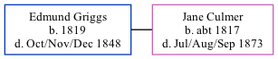

Edmund Griggs 1819 - 1848
[ Home ] | [ Calendar ] | [ Surnames Index ] | [ Family History ]Edmund Griggs, the husband of Jane Culmer (the four times great-aunt of Nigel Horne), was born in Stourmouth, Kent, England in 18191. He married Jane in Stourmouth in Oct 18393. In 1841, he lived at his birthplace1 which is where he died in Oct/nov/dec 18482.
Citations
- 1841 England Census Online publication - Provo, UT, USA: The Generations Network, Inc., 2006.Original data - Census Returns of England and Wales, 1841. Kew, Surrey, England: The National Archives of the UK (TNA): Public Record Office (PRO), 1841. Data imaged from the National
- England & Wales, FreeBMD Death Index: 1837-1915 Online publication - Provo, UT, USA: The Generations Network, Inc., 2006.Original data - General Register Office. England and Wales Civil Registration Indexes. London, England: General Register Office. © Crown copyright. Published by permission of the Cont
- England & Wales, FreeBMD Marriage Index: 1837-1915 Online publication - Provo, UT, USA: The Generations Network, Inc., 2006.Original data - General Register Office. England and Wales Civil Registration Indexes. London, England: General Register Office. © Crown copyright. Published by permission of the Cont
Family Tree
Generated by ged2site. Last updated on Nov 13, 2024